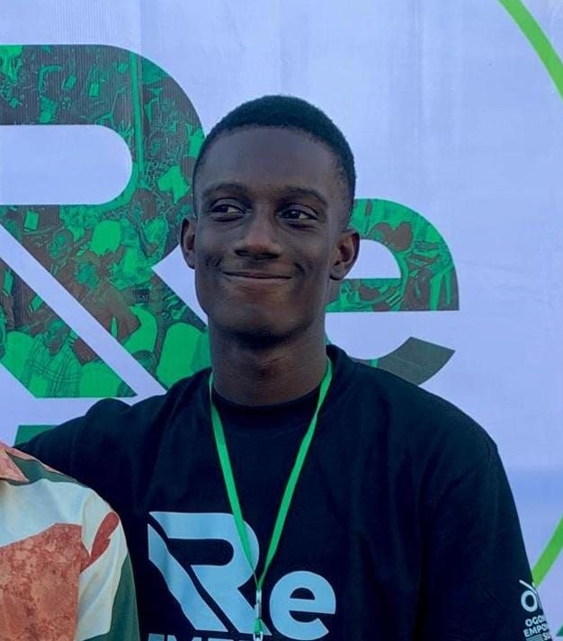

Available for backend roles · Port Harcourt, NG
// Backend Systems Engineer
I build backend systems that hold up: built for real load, real failures, and real scrutiny. I've shipped authentication systems, fault-tolerant infrastructure, job schedulers, and security tooling. I write TypeScript for APIs, Rust for systems, and I think in failure modes before I think in features.

ekojoe · 2026
About
I'm a 19-year-old backend developer with about a year of hands-on experience. I started with Express, moved to NestJS, and started learning Rust because I wanted to understand what's actually happening underneath. I'm not a "tutorial developer" — I build tools I actually want to exist.
Outside of code I grind LeetCode for DSA, play football, and have a long-term goal of working at the intersection of software and marine technology. An unusual combination I think will matter as that industry modernises.
Core Stack
Systems & Security
Backend Patterns
Other
Projects
Original tools and HNG14 internship work. All real backend systems, none of it tutorial-level.
A production-grade background job scheduler with a heap-based priority queue, DAG workflow support, automatic retries with exponential backoff, recurring jobs, dead-letter queue, and live SSE updates. Built from scratch including the MinHeap data structure and a timing wheel as an alternative algorithm for benchmarking.
What makes it interesting
The heap comparator orders jobs by priority, then scheduled time, then creation time. Starvation prevention ages low-priority jobs every 30s. DAG dependencies are validated before each job is claimed. SELECT FOR UPDATE SKIP LOCKED prevents duplicate job processing across workers.
A pre-deployment security scanner for Node.js projects, written in Rust. Zero-config: validates environment variables, detects hardcoded secrets before they ship, and auto-generates .env.example files. Supports custom rule definitions. Distributed as a single binary.
Why it exists
Most security mistakes are caught after deployment. I wanted a tool that catches them before. Built entirely in Rust, my first serious systems-language project.
A Telegram bot for website uptime monitoring. Users register sites, the bot tracks status and sends alerts on downtime. Built on NestJS, TypeORM, PostgreSQL, and grammY. Demonstrates event-driven design, persistent state, and real-world service integration.
What I built
Full bot from scratch: command handling, site registration, periodic health checks, status persistence, and alert delivery on downtime detection.
Full auth layer for a demographic intelligence platform. GitHub OAuth with PKCE, access/refresh token lifecycle, and role-based access control across three separate interfaces: a backend API, a globally installable CLI, and a browser portal with HTTP-only cookies and CSRF protection.
What I built
The entire auth system: OAuth with PKCE, token management, RBAC enforcement, the installable CLI (~/.insighta/credentials.json), and the web portal session layer.
A production-grade retry engine for outgoing HTTP requests. Callers return immediately as pending. A background worker handles the actual request, retrying on transient failures with exponential backoff and per-attempt jitter. Terminal 4xx failures never retry. Dead-letter storage for exhausted requests.
What I built
Full engine from scratch: queue layer, background worker, backoff scheduling, retryable vs terminal failure discrimination, and dead-letter handling.
Featured Deep Dive
My most technically dense project. A production-deployed background job scheduler built from scratch, including the data structures. Full breakdown below.
// the problem
Most backend systems handle background jobs with a simple queue: jobs come in, jobs go out in order. That breaks down when you need priority levels, future scheduling, job dependencies, automatic retries, and protection against duplicate processing across workers. I wanted to build something that handles all of it properly, not just the happy path.
// how it works · request flow
// the heap comparator
The MinHeap uses a three-level comparator. In a min-heap the smallest value rises to the top, so the comparator is designed so the most urgent job has the smallest value:
// starvation prevention
The problem: A low-priority job (priority 3) can wait forever if high-priority jobs keep arriving. Classic starvation.
The fix, aging formula: Every scheduler tick, each job's effective priority is recalculated:
effectivePriority = Math.max(1, originalPriority - Math.floor(waitMs / 30_000))
A low-priority job waiting 30s becomes medium. Waiting 60s becomes high. Threshold is 30 seconds, documented and configurable.
// heap vs timing wheel · benchmark
I implemented both algorithms and benchmarked them at 1k and 10k jobs:
The timing wheel wins on speed but cannot guarantee priority ordering within a time slot. The heap is used as the primary scheduler. The timing wheel would be better for millions of uniform recurring jobs where within-window ordering does not matter.
Learning Reflection
Honest version. No performance, no buzzwords.
The gap between "it works" and "it holds up" is enormous. I used to stop at working. Now I think about what happens under load, what happens when the DB is slow, what happens when the external service is down. That shift changed how I design at the start, not just at the end.
Edge cases are the job. Duplicate requests, concurrent writes, partial failures, expired tokens. I used to treat these as things to handle later. Now I treat them as the first things to design for. A system that fails gracefully is more valuable than one that works perfectly only under ideal conditions.
Writing before building is not overhead. It caught two bad architectural decisions before I wrote a single line. I write before I code now. It saves time, not wastes it.
Rust changed how I read TypeScript. Learning Rust, even partially, made me more aware of memory, allocation, and what abstraction actually costs. TypeScript feels different when you understand what's underneath it.
I know where my ceiling is now. Docker, CI/CD, distributed systems, proper observability, load testing. I know what I haven't done yet. That's more valuable than not knowing. The roadmap is clear and I'm on it.
Contact
Open to backend roles, internships, and interesting problems. I respond.